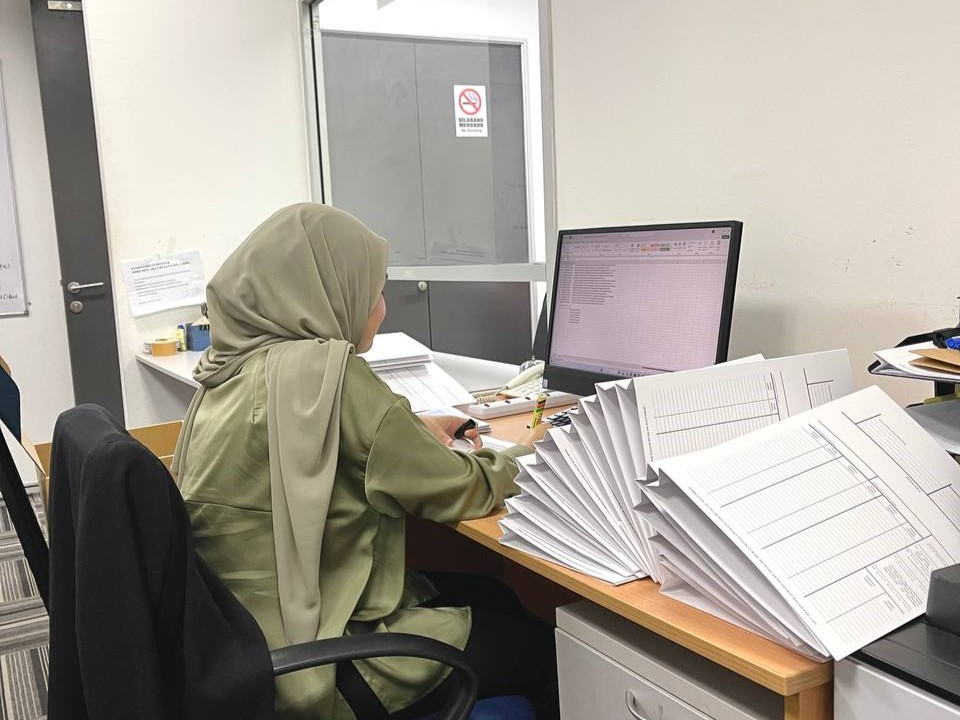
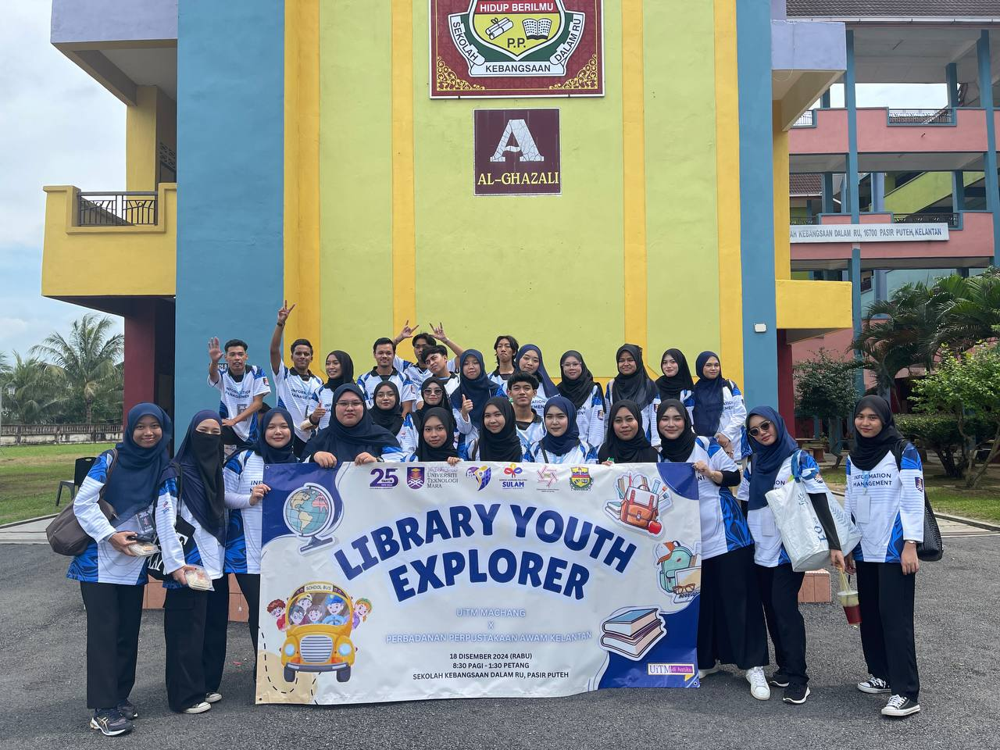
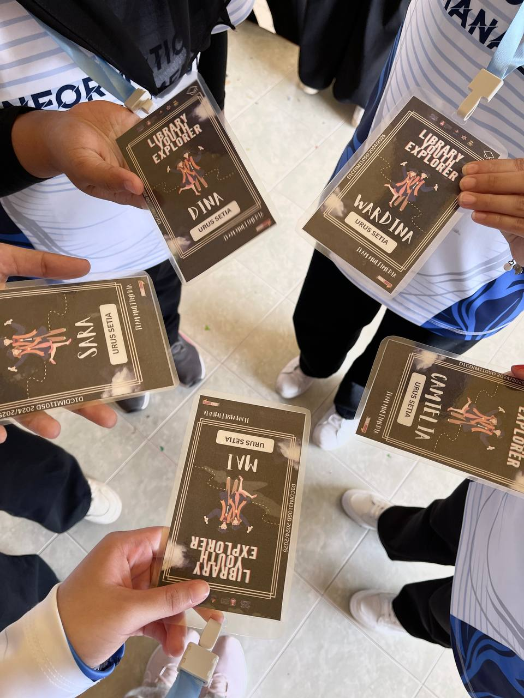

| INTERSHIP |  I did my internship at TEKUN Nasional in Kuala Lumpur which lasted from 22 July 2024 to 13 September 2024 . During the training, I was placed under the system & method department known as JSIKA which is the unit register record TEKUN known as URRT. .jpg) During my industrial training, I gained a lot of knowledge about how to register documents in the DDMS 2.0 system. DDMS is known as domain data management services to store, access and retrieve metadata and bulk data from applications connected to the data. Furthermore, I was able to open files, and I also sent incoming documents from certain departments to other departments. In addition, I was able to key in the information about documents such as titles and classification numbers. This experience gave me the opportunity to improve my soft skills, communication skills and more. |
|---|---|
| PROGRAM: LIBRARY YOUTH EXPLORER |  On December 18, 2024, my classmates and I organized a program at Sekolah Kebangsaan Dalam Ru in Pasir Puteh. The name of the program was Library Youth Explorer.  I held a position under the multimedia team. I took photos and videos during the program. Additionally, I designed certificates for the committee members, which were for me and my classmates. |